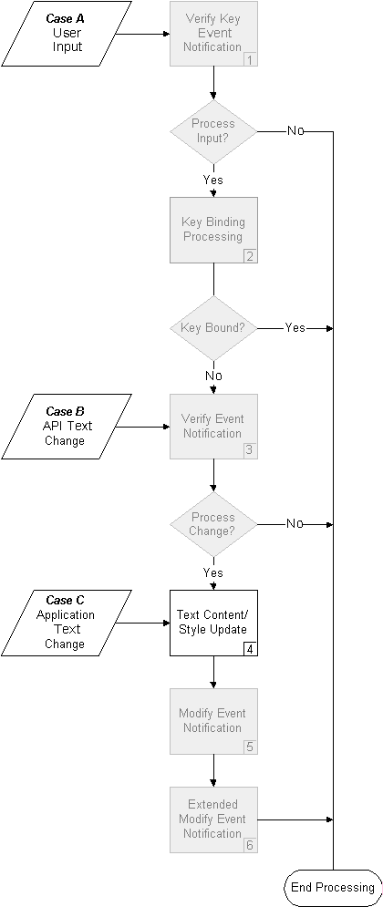
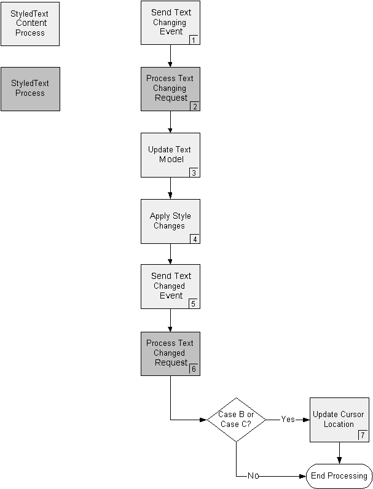
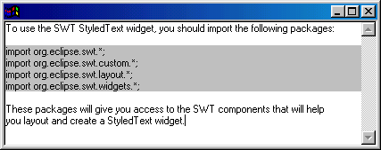

| Eclipse Corner Article |

SummaryThe StyledText widget is a customizable widget that can be used to display and edit text with different colors and font styles. In this article we discuss why you might want to customize the StyledText widget and how you would do that. The article assumes you are familiar with the concepts presented in our other article, "Getting Your Feet Wet With the SWT StyledText Widget".
By Lynne Kues and Knut Radloff, OTI
October 17, 2001; updated September 18, 2002 for Eclipse 2.0
The StyledText widget is designed as a pluggable widget. You can supply any or all of the following components in order to customize the widget to your needs:
The StyledText widget supplies default implementations for all of the above objects. Therefore, you can supply any combination of the above components. For example, you could supply just a StyledTextContent implementation and use the StyledText widget’s default LineStyleListener and LineBackgroundListener.
One of the main reasons to provide a content implementation for the StyledText widget is to avoid data duplication. If the text that is to be displayed by the StyledText widget is already stored and maintained in an object, you can eliminate data duplication by providing a content implementation.
Providing your own StyledTextContent implementation will also give you more flexibility since you will have direct access to the text content. For example, you may want to manipulate the text independently of the widget.
The StyledTextContent interface defines the protocol that is used by the StyledText widget to get information about the text content it should display. The interface contains all the methods that must be implemented in order to supply your own content implementation.
void addTextChangeListener(TextChangeListener listener)
This method is called by the StyledText widget in order to register itself as a listener for content changes. The StyledTextContent implementer must store TextChangeListeners and notify these listeners when content changes occur. Notification occurs in two steps. First a TextChangingEvent should be sent when text content is about to change and then a TextChangedEvent should be sent when the text content has changed. Notification should occur in the replaceTextRange method (discussed below).
String getLine(int lineIndex)
This method should return the line at the given lineIndex without the line delimiter. Line indexes are zero-based. For example:
line delimiter = "\r\n" text content = "Line 1\r\nLine2\r\nLine 3" getLine(0) should answer "Line 1" getLine(2) should answer "Line 3"
int getLineAtOffset(int offset)
This method should return the index of the line at the given character offset. Character offsets are zero-based. For example:
line delimiter = "\n" text content = "Line 1\nLine2\nLine 3" getLineAtOffset(6) should answer 0 getLineAtOffset(7) should answer 1
int getLineCount()
This method should return the number of lines in the text content. For example:
line delimiter = "\n" text content = "Line 1\nLine2\nLine 3" getLineCount() should answer 3
String getLineDelimiter()
This method should return the line delimiter that should be used when inserting new lines (i.e., via the keyboard) into the text content.
int getOffsetAtLine(int lineIndex)
This method should return the character offset of the first character for the given lineIndex. Character offsets are zero-based. For example:
line delimiter = "\r\n" text content = "Line 1\r\nLine2\r\nLine 3" getOffsetAtLine(1) should answer 8 getOffsetAtLine(2) should answer 15
String getTextRange(int start, int length)
This method should return the text for the given range. The range begins at character offset start and continues length characters. For example:
text content = "Line 1\r\nLine2\r\nLine 3" getTextRange(3,8) should answer "e 1\r\nLin"
void removeTextChangeListener(TextChangeListener listener)
This method should remove a registered TextChangeListener. The listener will no longer be notified of content changes.
void replaceTextRange(int start, int length, String newText)
This method should replace the given text range (beginning at offset start and continuing for replaceLength characters) with newText. Before the text update occurs, the StyledTextContent implementor should notify its registered TextChangeListeners of the pending change. Notification should occur via the TextChangingEvent.
public class TextChangingEvent extends TypedEvent {
public int newCharCount; // the length of the new text
public int newLineCount; // the number of new lines to be inserted
public String newText; // the text to be inserted
public int replacedCharCount; // the length of the text to be replaced
public int replacedLineCount; // the number of lines to be replaced
public int start; // the start offset of the text to be replaced
}
Note that newLineCount and replacedLineCount should indicate the number of lines in the text to be inserted and the number of lines in the text to be replaced, respectively. For example:
replaced text |
inserted text |
replacedLineCount |
newLineCount |
"" |
"\n" |
0 |
1 |
"\n\n" |
"a" |
2 |
0 |
"a" |
"\n\n" |
0 |
2 |
"\n" |
"" |
1 |
0 |
After the text content is updated, the StyledTextContent implementor should notify its registered TextChangeListeners that the change is complete. Notification should occur via the TextChangedEvent. When the StyledText widget receives this event, it will update the widget to reflect the change. The TextChangedEvent does not contain any data since all the information about the change is included in the TextChangingEvent.
void setText(String newText)
This method replaces the entire existing text with newText. Use this method to initially specify the text content.
Note that the StyledTextContent implementation does not deal with text styles. It is only responsible for managing the text content. The LineStyleListener and LineBackgroundListener objects manage style information. When you implement a StyledTextContent, you are not required to implement a LineStyleListener or a LineBackgroundListener. StyledText's default implementations of LineStyleListener and LineBackgroundListener will not change style information when a content change occurs. Styles for existing text will remain as before the content change and new text will not be assigned any styles. If a content change requires style changes, you can use the replaceStyleRanges (new since Eclipse 2.0) and setStyleRange API to update the style information. When to update style information is discussed below in the "Text Content/Style Update Processing" section
It is up to the StyledTextContent implementation to decide which line delimiters it will recognize in order to determine the lines that are represented in a text string. The default StyledTextContent implementation that is supplied with the StyledText widget recognizes any combination of "\n", "\r\n", and "\r" as line delimiters. Doing so ensures that strings created with different line delimiters are interpreted correctly. Note that the delimiter for a specific platform comes into play when new lines are inserted. When inserting text, you want the new lines to be created with the platform line delimiter so that copy and paste operations between platform applications work properly. You specify the delimiter to use when inserting new text via the getLineDelimiter method.
As discussed above, when a text change occurs, the StyledTextContent needs to send a TextChangingEvent and a TextChangedEvent to notify the StyledText widget about the text change. Text changes can occur in one of three ways:
The following diagram indicates how these text changes occur within the StyledText widget. The boxes in gray are discussed in length in our first article, "Getting Your Feet Wet With the SWT StyledText Widget". For this article, we will expand upon the processing that occurs in Step 4, "Text Content/Style Update".

The Text Content/Style Update process begins with the StyledText widget or your application (for Case C) calling the replaceTextRange(int, int, String) method. This method is the time and place to send the text change events and to update your text content. How processing should occur is depicted in the diagram below. The light gray boxes represent the processing that your StyledTextContent implementation should perform, while the dark gray boxes represent the processing that occurs in the StyledText widget.

The text content/style update process is started by sending the TextChangingEvent (1). In response to this event, the StyledText widget prepares for the text change by posting screen update operations for the area of the text change (2). After the TextChangingEvent is sent, the application should update its text content to reflect the change (3), apply style changes (4), and send the TextChanged event (5). When the StyledText widget receives the TextChangedEvent it will update itself in accordance with the change (e.g., scroll bars will be adjusted) and the text change will be visibly presented in the StyledText widget (6). If you don't supply a LineStyleListener as described below, part of the text change process will include updating the style ranges to accommodate the text change (occurs in Step 2). As discussed in the first article "Getting Your Feet Wet With the SWT StyledText Widget", the StyledText widget maintains styles for existing text and does not apply styles for any new text. If the new text requires styles or the existing styles need to be modified, this should be done in Step 4.
Note that the rules that apply to updating styles also apply to updating line background colors. If you do not supply a LineBackgroundListener as described below, part of the text change process will include updating line background colors if the text change includes adding or removing lines. As with styles, the StyledText widget maintains existing line background colors. If the line background colors need to be updated as a result of the text change, this should be done in Step 4.
Note that between the time that your StyledTextContent implementation sends the TextChangingEvent and the TextChangedEvent, your implementation should not use API that will cause a scroll operation to occur or that will cause posted paints to be flushed. The StyledText widget also does not handle nested text content updates, so when processing text content changes, the application should not use API that will cause text updates to occur.
The StyledText widget only modifies the cursor location when text is changed via user input. In all other instances (i.e., Case B and Case C in Figure 1 above), if the application wishes the cursor location to change as a result of the text content change, the following methods can be used to set the cursor location to an offset and to make that offset visible:
setSelection(offset, 0) showSelection()
When implementing a StyledTextContent, the algorithm for updating the text content when modifications occur must be fast. If it is not, you will experience sluggishness during typing (i.e., as your StyledTextContent attempts to deal with the text change). Similarly, the algorithm for returning the text for a line should be fast. If it is not, you will experience sluggishness during scrolling. It is also important to ensure that your implementation scales well. When the text content gets larger, handling of text replace operations and answering lines should not be adversely affected from a performance standpoint.
For an example of a StyledTextContent implementation, refer to the class org.eclipse.swt.custom.DefaultContent. DefaultContent is the content implementation that the StyledText widget uses by default.
The following Java™ class can be used to test a StyledTextContent implementation. When executed, the class will run through a number of test scenarios that exercise the StyledTextContent interface. To use the class, import it into the package that contains your StyledTextContent implementation. Then specify the fully qualified name of your implementation class as an argument to the StyledTextContentSpec’s main method. As each test scenario is executed, System.out will be updated to indicate whether or not each test passed. Note that this class is designed to work with a StyledTextContent implementation that supports "\r", "\n", and '\r\n" as line delimiters.
One of the main reasons to use a customized LineStyleListener is to support on-demand line styling. Instead of using the replaceStyleRanges (new in Eclipse 2.0), setStyleRanges and setStyleRange methods to statically set the style information for the widget’s text, style information can be provided dynamically on a line-by-line basis.
If styles are determined based on the actual text content, on-demand line styling can be used since the text of each line is passed to the LineStyleListener. Text styles that are used for syntax highlighting can typically be provided dynamically. For example, except for block comments, all of Java’s syntactic elements occur on one line. It would be more efficient to use a dynamic, customized LineStyleListener vs. the StyledText API to implement Java syntax highlighting. If you used the StyledText API, style information would be maintained statically and any time text changes occurred this information would have to be updated (e.g., via the setStyleRange API). Using the StyledText API would also require you to parse the entire text up front. If on-demand line styling were used, the text would be parsed on an as needed basis, as it is displayed, thus improving initial load time.
Another reason to use a customized LineStyleListener is to avoid duplicating data. When the StyledText methods replaceStyleRanges, setStyleRanges and setStyleRange are called, the StyledText widget will cache the StyleRange objects that are supplied as input parameters. However, if the information needed to construct style ranges is already stored by an object in your application, introducing a LineStyleListener that uses this object may be beneficial.
You may also use a customized LineStyleListener in order to provide application-specific text coloring behavior. By default, when text changes occur in the StyledText widget, text colors are updated as follows:
Note: A text replace operation is treated as a text delete operation followed by a text insert operation.
The StyledText widget does not make any assumptions about how to apply styles when text is inserted or deleted because how to update the styles will depend on how the StyledText widget is being used. For example, if the widget is being used to support syntax highlighting for a source code editor, coloring will occur only when inserted text completes a keyword. Whereas, if the widget is being used to support text attributes for a word processor, inserted text will most likely take on the style values of the characters adjacent to the text. To provide specific text style updating behavior you can introduce your own LineStyleListener.
The LineStyleListener interface defines the protocol that is used by the StyledText widget to get the styles of a displayed line.
void lineGetStyle (LineStyleEvent event)
The lineGetStyle method is called when a line is about to be drawn in order to get the line’s style information. When the method is called, the LineStyleEvent has two input fields set - LineStyleEvent.lineOffset contains the start offset of the line and LineStyleEvent.lineText contains the text of the line. It is your responsibility to set the output field, LineStyleEvent.styles. This field defines the StyleRanges for the text line. The widget uses the StyleRanges for measuring and rendering text when the lineGetStyle listener method returns. Each StyleRange object describes the foreground color, background color and font style for a range of text in the particular line your listener was called for. The range start offset is relative to the beginning of the document, not the beginning of the line.
If you implement your own LineStyleListener to supply line styles you may no longer use the replaceStyleRanges, setStyleRange, setStyleRanges or getStyleRange API. You can supply style information using a LineStyleListener or the API, but not both.
Ideally, you only have to use the line text and offset information supplied in the LineStyleEvent passed in to the lineGetStyle listener method to calculate line style information. However, it may be necessary for you to store style information and simply look up the styles when your listener method is called. In this case, you will have to update the style information when text changes occur. To do this, you can listen to the extended modify event (described in detail in our first article). The extended modify event is sent after the widget text has been updated, but before the screen updates take effect. In this manner, inserted text can immediately use any styles that have been specified. Note that it does not make sense to use the modify event to update styles in this manner since the modify event does not contain any specific information about the text change (e.g., character offset of the inserted text).
If, as a result of the text change, style information before or after the lines modified by the text change is changed, you will have to redraw the affected area of the widget. For example, if you are using the StyledText widget for java syntax highlighting in a source code editor, deleting the beginning of a block comment (i.e., "/*") will affect lines after the line on which the text change occurred. In this instance, it would be the application’s responsibility to redraw the other comment lines. The StyledText widget will only update text lines based on the text change that occurred.
The StyledText widget provides two redraw methods to support the above scenarios:
public void redrawRange(int start, int length, boolean clearBackground) public void redraw(int x, int y, int width, int height, boolean all)
The first, redrawRange, lets you specify the exact text range to redraw using character offsets. The second method, redraw, is the standard SWT redraw method that redraws a pixel based rectangle in the widget. SWT provides another redraw method, which is not shown here. It does not have any arguments and redraws the whole widget. You can use this method, but it will cause the text to flash since it performs a full clear and redraw of the widget.
If you implement your own LineStyleListener, keep in mind that the listener is called every time a line is rendered or scrolled and when a key is pressed. It is therefore important that the lineGetStyle method is fast and that it scales well for use with large amounts of text. If you experience a lag when typing and scrolling, your LineStyleListener implementation is too slow. If typing and scrolling is slow at the end of the text, your algorithm does not scale well. Note that unresponsive typing may also be caused by slow processing in VerifyListeners, ModifyListeners or ExtendedModifyListeners (see our first article for more information about verify and modify listeners).
If you implement a LineStyleListener and store the StyleRange objects (instead of calculating them on demand) it is advisable to merge adjacent styles that have the same style data. Merging StyleRanges improves the performance of text measuring and rendering in the StyledText widget because fewer StyleRange objects have to be processed.
If you redraw text during the extended modified event, make sure that you only redraw text ranges that actually have new styles. Unnecessary refresh operations can cause flash and degrade performance. See the discussion in the "Text Refresh" section of our first article for more information about what flash means and what causes it.
For an example of a LineStyleListener implementation, refer to the class org.eclipse.swt.custom.DefaultLineStyler. This class’ implementation of the LineStyleListener interface is the implementation that the StyledText widget uses by default. The class illustrates the concepts discussed above, including how to merge neighboring styles
The following example is the lineGetStyle method from a LineStyleListener that implements a simple Java syntax coloring strategy. The method constructs the StyleRange objects dynamically (i.e., every time they are requested) and merges similar styles for improved rendering performance. The example method code is taken from the SWT Java Syntax Viewer example, which is part of the example plugins that can be downloaded with the Eclipse SDK. The example code can be found in the plugins subdirectory org.eclipse.swt.examples. Three classes comprise the example - JavaViewer, JavaLineStyler and JavaScanner. The JavaScanner class is an inner class of JavaLineStyler.
The JavaScanner class implements a Java syntax scanner. The JavaScanner public API includes the methods:
void setRange(String) int nextToken() int getStartOffset() int getLength()
as well as constants for the different Java syntax elements that need highlighting. In addition, the method Color getColor(int) returns a Color object for a given Java syntax constant.
In the example, we set the text of the line we want to syntax scan in the Java scanner. We apply different colors to each token and keyword tokens are given a font style of bold. If the color for a token differs from the widget foreground color or if the token is a keyword (in which case a StyleRange would be necessary in order to specify a bold font style), we create a new StyleRange object for that element. If the previous StyleRange object has the same foreground color, background color and font style, it is considered similar and the two ranges can be merged. Merging StyleRanges improves the performance of text measuring and rendering in the StyledText widget.
The lineGetStyle method also includes special processing for handling the StyleRanges that are created for keywords. In Java code, multiple keywords are often grouped together (e.g., "public static final int"). To minimize the number of StyleRanges that are created in this instance, spaces between the keywords are assigned a bold font style. This strategy will lead to only one StyleRange for a group of keywords vs. multiple StyleRanges (i.e., one for each keyword and one for each space between the keywords). The strategy will also minimize the number of font style changes that occur during rendering (i.e., the number of changes from the normal font to the bold font).
When the complete line has been scanned and processed, the styles are copied into the LineStyleEvent.
public void lineGetStyle(LineStyleEvent event) {
Vector styles = new Vector();
// If the line is part of a block comment, create one style for the entire line.
if (inBlockComment(event.lineOffset, event.lineOffset + event.lineText.length())) {
styles.addElement(new StyleRange(event.lineOffset, event.lineText.length(), getColor(COMMENT), null));
event.styles = new StyleRange[styles.size()];
styles.copyInto(event.styles);
return;
}
int token;
StyleRange lastStyle;
Color defaultFgColor = ((Control)event.widget).getForeground();
scanner.setRange(event.lineText);
token = scanner.nextToken();
while (token != EOF) {
if (token == OTHER) {
// no syntax highlighting necessary
} else if ((token != WHITE) {
// Only create a style if the token color is different than the widget's default foreground color and the
// token’s fontStyle is not bold.
Color color = getColor(token);
if ((!color.equals(defaultFgColor)) || (token == KEY)) {
StyleRange style = new StyleRange(scanner.getStartOffset() + event.lineOffset, scanner.getLength(), color, null);
if (token == KEY) {
style.fontStyle = SWT.BOLD;
}
if (styles.isEmpty()) {
styles.addElement(style);
} else {
// Merge similar styles.
lastStyle = (StyleRange)styles.lastElement();
if (lastStyle.similarTo(style) && (lastStyle.start + lastStyle.length == style.start)) {
lastStyle.length += style.length;
} else {
styles.addElement(style);
}
}
}
} else if (!styles.isEmpty()) && ((lastStyle=(StyleRange)styles.lastElement()).fontStyle == SWT.BOLD)) {
// Have the white space take on the bold style before it to minimize the number of style ranges.
int start = scanner.getStartOffset() + event.lineOffset;
if (lastStyle.start + lastStyle.length == start) {
lastStyle.length += scanner.getLength();
}
}
token= scanner.nextToken();
}
event.styles = new StyleRange[styles.size()];
styles.copyInto(event.styles);
}
As with the LineStyleListener, one reason to use a customized LineBackgroundListener is to avoid duplicating data. When the StyledText method setLineBackground is called, the StyledText widget will cache the colors for the specified lines. If this information is already stored by an object in your application, introducing a LineBackgroundListener that interacts with this object will eliminate data duplication.
You may also use a customized LineBackgroundListener in order to provide application-specific line background coloring behavior. The StyledText widget maintains line background colors relative to text lines. By default, when text changes occur in the StyledText widget, line background colors are updated as follows:
For example, in the window below, a line background color of gray is used to emphasize the import statements. If text lines are inserted or deleted, you would want the line background color that is associated with the block of import statements to be maintained.

Your application may want line background colors to be updated
differently when text changes occur. For example, if you want the background of every
other line to be gray (e.g., in order to facilitate reading tabulated text), you would
need to "shift" line background colors as lines are deleted or inserted. You
could easily support this behavior by implementing your own LineBackgroundListener.
The LineBackgroundListener interface defines the protocol that is used by the StyledText widget to get the line background colors to use when displaying the text. The interface, LineBackgroundListener, contains the methods that must be implemented in order to supply your own line background color implementation.
void lineGetBackground(LineBackgroundEvent event)
This method is called when a line is to be drawn in order to get the line’s
background color. LineBackgroundEvent will contain the start offset, lineOffset,
and the text, lineText, of the line to be drawn. Fill in the background color in
the lineBackground field. A value of null indicates that the default widget
background should be used for the line.
In the following example, a LineBackgroundListener is used to color the background of every other line to light gray. The method assumes that we have a cache of colors indexed by RGB value.
public void lineGetBackground(LineBackgroundEvent event) {
int line = ((StyledText) event.widget).getLineAtOffset(event.lineOffset);
if ((line % 2) == 1) {
event.lineBackground = (Color)colors.get(new RGB(222, 222, 222));
}
}
Line background colors are drawn for the width of the widget, not the width of the text. If a text background color is defined (i.e., via a StyleRange), this color will overlay the line background color.
If you implement your own LineBackgroundListener, the following StyledText methods are not applicable and should not be used since your LineBackgroundListener will be maintaining and storing line background colors:
public Color getLineBackground(int
index)
public void
setLineBackground(int startLine, int
lineCount, Color background)
When you implement a LineBackgroundListener, since the setLineBackground API is no longer available, you will be responsible for refreshing line background colors within the widget. For example, if a text content change alters line background colors for lines other than the lines on which the text change occurred, it would be the LineBackgroundListener’s responsibility to redraw these lines. You can refresh line background colors by using the redraw(int x, int y, int width, intheight, boolean all) method. The input parameters to this method specify a pixel-based rectangle. You can use other StyledText API (e.g., getLocationAtOffset) to calculate the rectangle for a line.
When you implement a LineBackgroundListener you should make sure that you only initiate line background updates when necessary. Unnecessary refreshing of lines will cause flash and degrade performance of the StyledText widget, as discussed in the Text Refresh section of our first article.
For an example of how to implement a LineBackgroundListener, refer to the class org.eclipse.swt.custom.DefaultLineStyler. The DefaultLineStyler implements the LineBackgroundListener behavior that the StyledText widget uses by default.
Java and all Java-based trademarks and logos are trademarks or registered trademarks of Sun Microsystems, Inc. in the United States, other countries, or both.